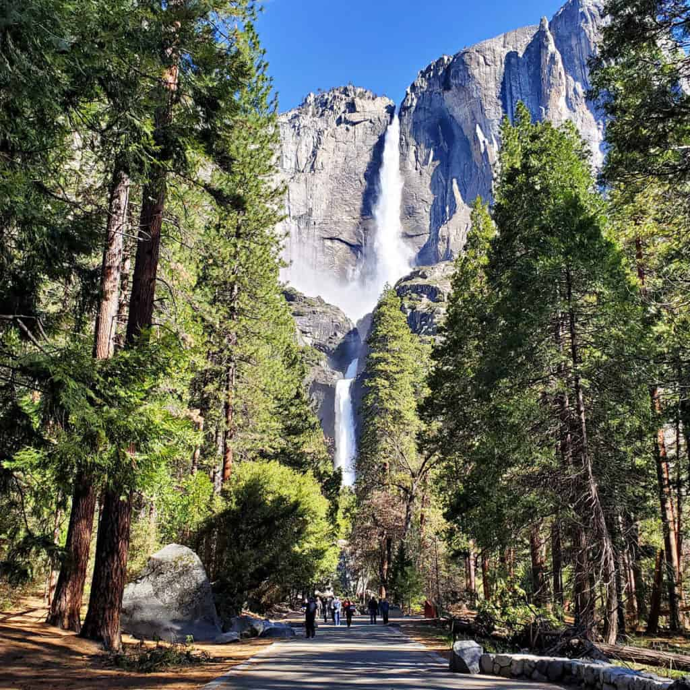

Yosemite National Park is often rated as one of, if not the top National Parks in the United States.
Located in California, the park boasts a myriad of waterfalls, mountains, campsites, and much more!
Yosemite National Park is also a very active spot for rock climbers seeking to climb both with and without ropes on some of its tallest cliffs.
Must see spots:
Yosemite Valley
Hetchy Hetch
Mariposa Grove
Tuolumne Meadows
Crane Flat Area
Visitor Tips:
For any locations that have a gate opening in the morning, come early for the best chance to get good parking!
Follow proper Leave No Trace principles, such as:
Dispose of trash
Respect other parkgoers
Respect wildlife
Minimize campfire impacts
Come prepared with plenty of water, food, and other necessities.
Plan your route ahead of time, and keep a map on hand.
Keep an eye on the weather both before you come to the park and for the duration of your stay.
I know what you're thinking: "How can I trust your totally cool tips?"
Well, trust your fellow readers!
"National Park Pilgrim has helped me to find accurate information on a bunch of National Parks! They provide relevant and concise information that helps you to narrow down your trip to the best locations and activites."

Pictured above is Yosemite Falls, one of the many beautiful waterfalls that can be found around the park.Head on back to the home page!